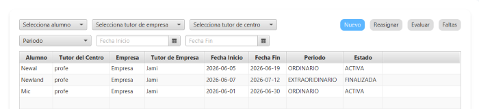

Para registrar una nueva formación en empresa debes seleccionar el alumno que participará en esta FE, su tutor en la empresa, su tutor en el centro, el periodo en el que se llevará a cabo, y sus fechas, luego darle al botón "Nuevo"
Para editar o reasignar una FE, se selecciona la FE, y se modifican los datos que se precisen. Este cambio se puede considerar como una nueva FE si se marca la casilla "nueva FE", cancelando la anetior.
Para evaluar una FE, selecciona la opción "Evaluar" y luego la FE que se vaya a evaluar, entonces se mostrarán los RAs a evaluar. Tras haber evaluado los RAs, vuelve a presionar "Evaluar" para guardar los cambios.
Para registrar una falta, selecciona "Faltas" y luego la FE del alumno a quien se registrará su falta, entonces selecciona una fecha, descripción y si está o no justificada. Una vez hecho esto, presiona el botón "Guardar Falta"
Volver